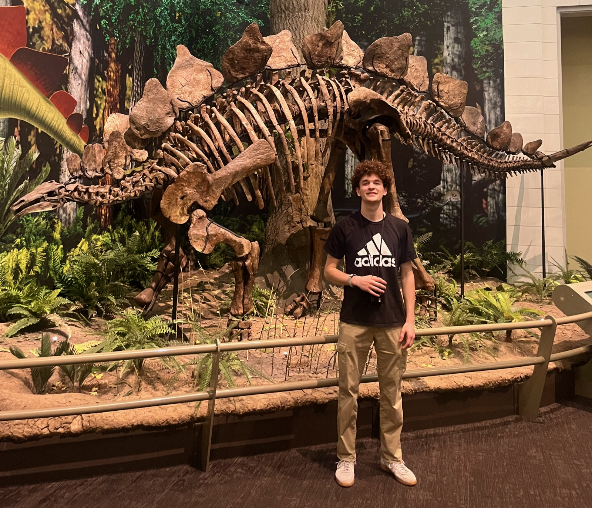

University of Rochester Biomedical Engineering · B.S. Candidate, Class of 2027 ✉ mharkin4@u.rochester.edu

About
I'm Max Harkins, a Biomedical Engineering undergraduate at the University of Rochester. I am interested in neuroengineering, particularly wearable EMG systems, motor-unit decomposition, and continuous kinematic decoding across changes in posture.
This past summer, I worked in the NeuroMechatronics Lab at Carnegie Mellon University in collaboration with Meta Reality Labs, developing an accessible hybrid point-and-click human–computer interface (HCI) using the Meta Neural Band.
Outside of research, I enjoy orchestral concerts, camping, and longboarding.
Documents
Pinned Projects